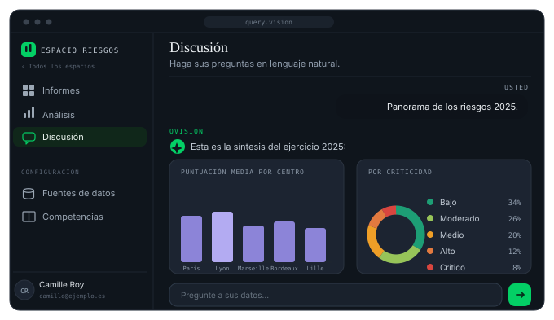
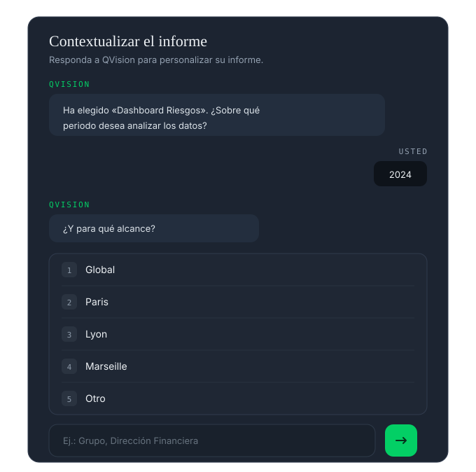
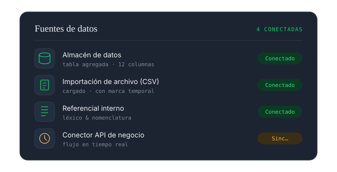

Query Vision transforma los datos complejos en decisiones simples. Interrogue sus cifras en lenguaje natural y obtenga al instante un informe con cifras, con fuentes y auditable. Sin hojas de cálculo, sin tickets, sin esperas.
Lo que el agente sabe hacer
Plantee la pregunta tal como la formularía de viva voz. El agente la traduce, la ejecuta y justifica cada etapa del cálculo — la consulta generada queda expuesta, nunca oculta.

Insight redactado, visualización adaptada, cifra clave destacada. Usted comprende leyendo, no interpretando — y cada informe puede contextualizarse, versionarse y exportarse.

Indicadores, dimensiones, jerarquías: Query Vision habla la lengua de su dirección, no la de las tablas técnicas — gracias al corpus profesional cargado durante la integración de sus datos.

Cómo trabaja
Sus fuentes, allí donde viven. Sin copias fuera de su infraestructura.
Modelización de negocio y reglas de gobernanza, establecidas en la integración.
En lenguaje natural, por todas las funciones autorizadas.
El análisis, no la hoja de cálculo. Legible de inmediato, con fuentes.
Difundir, exportar, automatizar la decisión — API y MCP.
Permisos por rol, workspace y producto — registro de auditoría de cada consulta — ejecución íntegramente en su infraestructura dedicada, alojada en Francia.
Siguiente paso
Una demostración con una muestra de sus datos y su vocabulario de negocio. Sin compromiso.